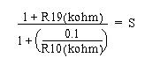

Operating Documentation
Direction 5114045-800, Rev# 10
LightSpeed 4.X Service Information (Advanced)
Operating Documentation |
| Required Persons | Preliminary Reqs | Procedure | Finalization |
|---|---|---|---|
| 1 |
The intercom board has R19 preset to 5.5k ohm and R10 preset to 1.25k ohm. No adjustments are normally needed. Verify these values are set correctly by using a multi-meter to measure test points TP1 & TP2 (yellow), for R10, and TP3 & TP4 (red), for R19.
At the console set the SCIM patient volume control to its midway point. You should not hear anything in the background when no one is speaking. If someone is talking at the gantry, the intercom should be activated.
Next rotate the gantry at 0.5 sec. The intercom system will come on briefly while the system is accelerating but should shut off once it reaches the 0.5 sec speed.
Verify the system will come on when someone is laying on the table and speaking into the microphone while the system is rotating at 0.5 seconds.
If Step 2 and Step 3 are working correctly and you can hear the patient clearly there is no need to make any adjustments.
If the intercom system comes on when the patient is talking but you are unable to hear the person clearly adjust R19 on the intercom board. Increase the resistance by 1K at a time until you can hear the person clearly. This will increase the sensitivity of ALC also.
If the system comes on and stays on or if it comes on and off intermittently when rotating at 0.5 seconds you will need to adjust the R10 potentiometer on the intercom board in the gantry.
Increase the resistance by 100 ohms at a time and repeat steps 1 through 6. Continue this process until the intercom system stays off when no one is talking, is activated when someone is speaking and the patient can be heard clearly.
| NOTE: | R19 is used to control the overall signal gain. Decrease the R19 value to decrease gain. Increase the R19 value to increase the gain (G). The gain is calculated by: |
1 + R19 (kohm) = G
R10 combined with R19 is used to control the sensitivity of Automatic Level Control (ALC). If the console speaker turns on frequently without patient speaking during 0.5 sec rotation increase the R10 value to desensitize ALC until the speaker turns off during gantry rotation without patient speaking. If patient has to yell to activate ALC, decrease the R10 resistance to increase sensitivity. The sensitivity (S) is calculated by:

No finalization required.